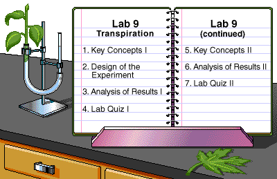

To make the most out of your LabBench experience, review the LabBench Tips.
To make the most out of your LabBench experience, review the LabBench Tips.
|
Key to Icons
|
 Safety
Safety Lab Skills
Lab Skillsby Theresa Knapp Holtzclaw
© 1998, Peregrine Publishers, Inc. All Rights Reserved.
Development Team
Transpiration is the major mechanism that drives the movement of water through a plant. In the first section of this laboratory you will investigate factors that influence the rate of transpiration. In the second section you will study plant anatomy as it relates to transport.
To do this laboratory, you should understand the basic concepts of water potential. You can review these by looking back at Lab 1. Diffusion and Osmosis.
